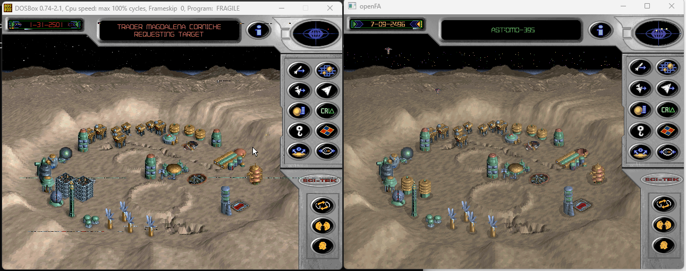
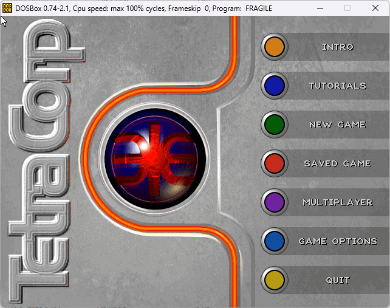
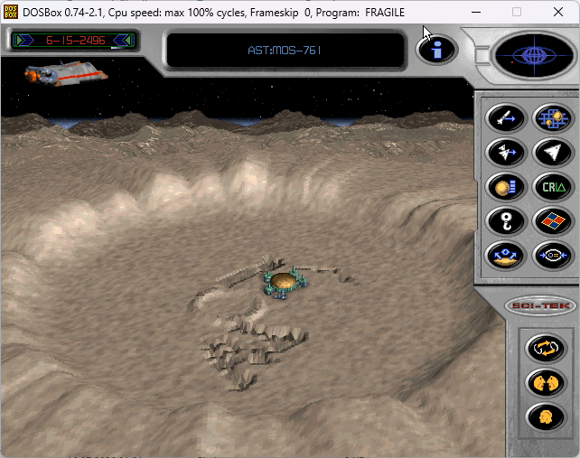
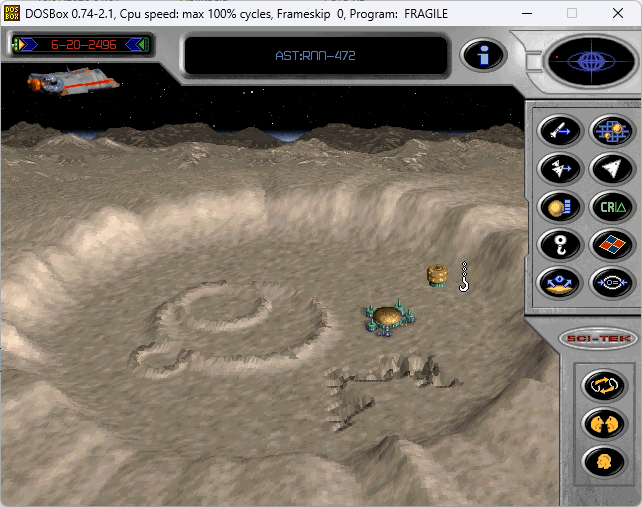

01
OpenTTD
Otwarta reimplementacja Transport Tycoon Deluxe ze wsparciem współczesnych platform.
 OpenFA
OpenFA
Niezależna rekonstrukcja Fragile Allegiance
Zmieńmy to.
Wersja rozwojowa · jeszcze niepubliczna · zweryfikowano 31 lipca 2026
OpenFA to niezależna rekonstrukcja gry strategicznej Fragile Allegiance z lat 90. Odtwarza zarządzanie koloniami, dyplomację i walkę na współczesnych systemach, zgodnie z udokumentowanym zachowaniem oryginału.

Wcześniejsze otwarte rekonstrukcje
OpenTTD i OpenRA to działające od lat przykłady otwartych projektów strategicznych.
01
Otwarta reimplementacja Transport Tycoon Deluxe ze wsparciem współczesnych platform.
02
Przenośny silnik dla kilku klasycznych gier z serii Command & Conquer.
03
OpenFA stosuje tę samą ogólną ideę do Fragile Allegiance, z osobnym kodem opartym na badaniach oryginału.
OpenFA jest niezależny od obu projektów. OpenRA wpłynął na część decyzji architektonicznych.
Oryginalna gra
W Fragile Allegiance zarządzasz koloniami TetraCorp w Fragmented Sectors: badasz asteroidy, budujesz osady i wysyłasz rudę do Federacji.
Badaj asteroidy i zakładaj działające kolonie.
Bilansuj media, pracowników, magazyny i transport rudy.
Handluj i negocjuj albo korzystaj ze szpiegostwa i sabotażu.
Badaj technologie, buduj floty i broń kolonii.



Projekt oryginalnej gry
Fragile Allegiance łączy zarządzanie kolonią, ruchome asteroidy, dyplomację, szpiegostwo, badania i walkę.
Oryginalna gra jest nadal dostępna w sprzedaży na GOG.com.
Rekonstrukcja
OpenFA odtwarza zachowanie na podstawie pliku wykonywalnego, zasobów, zapisów gry i obserwacji działania. Sam zrzut ekranu nie jest dowodem.
OpenFA to
OpenFA nie jest
Pakiety zawartości
Plik .fapkg to wersjonowane archiwum ZIP zawierające wyłącznie dane. Pakiety nie mogą wstrzykiwać kodu do symulacji.
Bezpieczne graniceTylko typowane dane; bez wykonywalnych wtyczek.
Powtarzalne składanieStałe identyfikatory i priorytety zapewniają powtarzalne składanie.
Chroniona zgodność z oryginałemOryginalne zapisy korzystają ze standardowego pakietu zgodności.
Wersja 1 obsługuje katalogi budowy. Kolejne typy zasobów można dodać później.
Zasady rekonstrukcji
Jak powstaje projekt
AI pomaga przeszukiwać dekompilat, a testy odtwarzają znane przypadki. Punktem odniesienia pozostają oryginalne dane.
01 / Analiza
AI łączy funkcje, struktury danych, zasoby i zapisany stan. Jego sugestie są traktowane jako hipotezy.
02 / Weryfikacja
Testy automatyczne obejmują parsery, zapisy, symulację, dekodowanie zasobów i akcje referencyjne.
03 / Odpowiedzialność
Nazwy i ocena wierności są sprawdzane ręcznie. Zmiany wizualne porównujemy w docelowym kliencie.
Rekonstrukcja w toku
Prace są oznaczone jako odtworzone, działające lub aktywne.
Odtworzone
Czytniki kontenerów obrazów, sprite'ów, palet i wideo.
Odtworzone
Typowany stan asteroid, frakcji, budynków, statków i symulacji z oryginalnych zapisów.
Działa w OpenFA
Deterministyczna rzeźba, maski budowy, projekcja i kompozycja.
Działa w OpenFA
Odtworzone skala, sensory, kolory właścicieli, ikony i wykrywanie kliknięć.
Aktywne prace
Łączenie budynków, statków, kolejek, menu i mechaniki gry.

Porównania referencyjne
Oryginał po lewej, OpenFA po prawej. Wybierz obraz, aby zobaczyć pełną rozdzielczość.


Analiza pliku wykonywalnego
Oryginalne zasoby
Zapisy gry
Obserwacja działającego programu
Dziennik prac
Wpisy opisują pierwszy dekoder w Pythonie, zapisy gry, rendering i interfejs.
Wpis dokumentuje skalę mapy, widoczność, kolory właścicieli i geometrię sensorów odtworzone z oryginału.
Czytaj wpisImporter zapisów odczytuje już budynki, floty, personel, dyplomację i rekordy dynamicznej symulacji.
Czytaj wpisPowierzchnia asteroidy zaczyna się od deterministycznej geometrii, odtworzonych masek i oryginalnej kolejności kompozycji.
Czytaj wpisPytania z sektora
Nie ma jeszcze publicznego buildu. Wersje rozwojowe działają w docelowym kliencie.
Tak. OpenFA importuje wymagane dane z legalnej instalacji Fragile Allegiance. Nie pobiera ani nie redystrybuuje zasobów oryginalnej gry.
To niezależna rekonstrukcja. Projekt nie ma oryginalnego kodu źródłowego.
Planowane są współczesne systemy desktopowe. Lista pojawi się po testach w docelowym środowisku.
Celem jest zgodność obrazu i zachowania. Rozszerzenia pozostają w osobnych pakietach.
Tak. Format .fapkg zawiera wyłącznie wersjonowane dane. Wersja 1 obsługuje katalogi budowy.
Tak. AI pomaga analizować zdekompilowany kod i łączyć dane. Ustalenia nadal wymagają oryginalnych źródeł lub powtarzalnych testów.
To projekt rozwijany w wolnym czasie, głównie latem. Nie ma harmonogramu wydań.
Nie ma jeszcze daty. Link pojawi się tutaj po otwarciu repozytorium.
Dziennik prac
Dziennik opisuje odtworzone formaty, decyzje implementacyjne i porównania z oryginalną grą.
Przejdź do dziennika{kind=link}